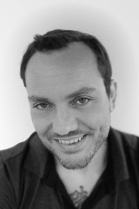

Stemmeskuespill med Stig Krogstad hos NorDubb - 2 dager. VENTELISTE. OBS ENDRET DATO
- Kategori:
- Kurs og workshops
Kurs og workshops
Åpent for profesjonelle skuespillere, dvs. treårig utdanning i skuespillerkunst eller tilsvarende profesjonell erfaring. - Dato:
- 18.11.2014 til 19.11.2014
- Start kl :
- 10:00
- Slutt kl :
- 16:00
- Pris:
- 1100,-
- Adresse:
- NorDubb Studios AS, Sandakerveien 24c, Bygg A, Oslo
 Det svært populære kurset i stemmeskuespill med Stig Krogstad er tilbake igjen! Meld deg på det eksklusive todagerkurset i stemmeskuespill som vi gjennomfører i samarbeid med NorDubb.
{kind=link}
Om kurset
Stemmeskuespill er mer enn å dubbe tegnefilmserier. Over to dagers går vi bl.a. gjennom dubbing (serier/live-action/kinofilm), informasjons- og e-lærings-voicing, lydbok-innlesing, hørespill/radioteater og reklamespeak. Kurset er rent praktisk anlagt og alle deltagere skal i studio og prøve ut alle genrer, samtidig som man observerer hverandres arbeide. Det blir også en hjemmeoppgave mellom kursdagene!
OBS! For at deltakerne skal få relevante utfordringer må alle som får plass sende inn stemmeprøve på max 30 sekunder. Presenterer deg selv og bakgrunnen din kort med din vanlige stemme. Opplys gjerne om du snakker mer enn én dialekt flytende. Ikke tenk på lydkvalitet, bruk telefonen din til å spille inn! Mp3-fil kan sendes til post(a)skuespillersenter.no. Hvis du ikke har utstyr til å ta opp en stemmeprøve, ta kontakt så kan vi hjelpe til.
Kurset foregår i NorDubbs lokaler i Sandakerveien 24c.
Om Stig Krogstad
Kursleder Stig Krogstad har jobbet med teater, film, tv, musikaler og dubbing siden 1990. Han har dubbet, oversatt og instruert versjonerte filmer og tv-serier siden 1995, og er blant annet norsk stemmeinstruktør og kreativ leder for filmer som Historien om Desperaux, Star Wars: Clone Wars, Monsters vs Aliens, Megahjerne, Ole Brumm, Den kjempestore bjørnen, Pus med støvler og ParaNorman m.fl. Stig har jobbet for alle dubbingstudioer i Norge, ved siden av sitt virke som utøver, produsent og oversetter for teatre og produksjonsselskaper i hele Europa. Han har også vært leder for Frilanskrets Østlandet i Norsk Skuespillerforbund i sju år, styre- og komitemedlem i NSF, Kulturrådet, Statens Kunstnerstipend, Fond for lyd og bilde, Generator etc – og er mest av alt opptatt av å få frem et godt kunstnerisk resultat, hver gang.
Om NorDubb
NorDubb Studios AS er et dubbingselskap som utfører de aller fleste oppgaver innen lyd-til-bilde. De har 5 studioer og en mixesuite. Deres spesialfelt er dubbing, reklame-VO, dataspill-versjonering og oversetting til en lang rekke språk. De har et mangfoldig stemmearkiv med skuespillere i alle aldre, og har omfattende kunnskaper om og lang erfaring med dubbing av film og TV.
Deltakere som ikke har vært på liknende kurs før vil prioriteres.
Pris for medlemmer av NSF: 1000,-